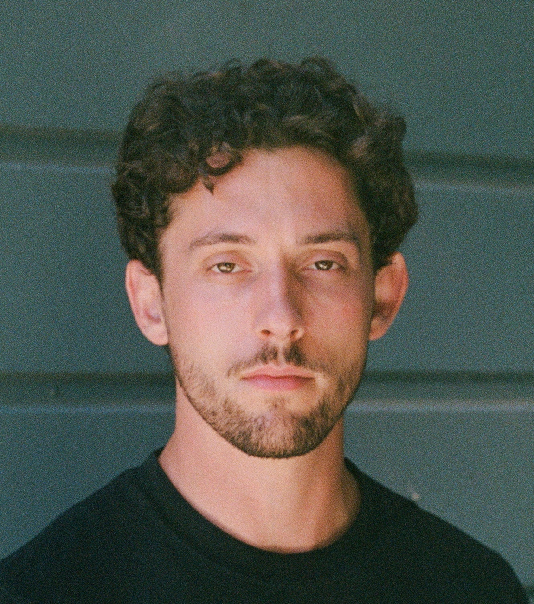
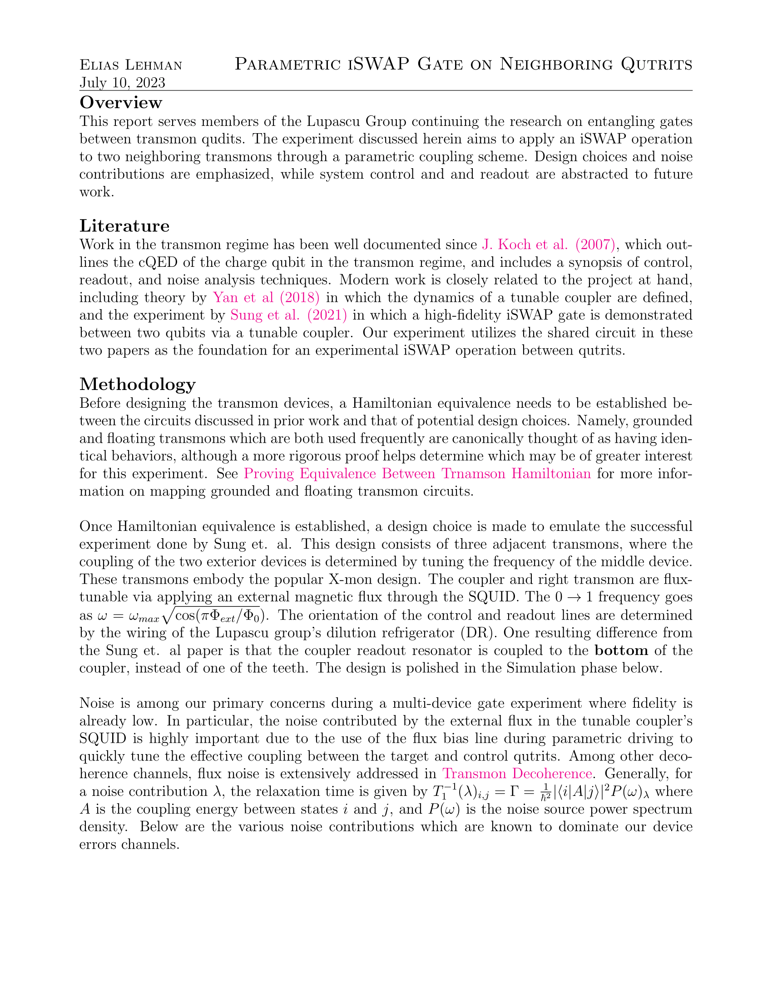
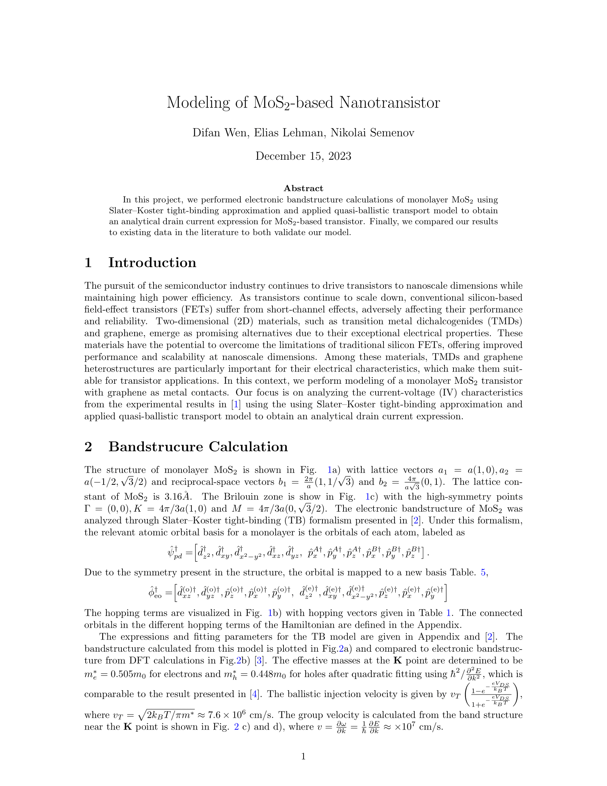
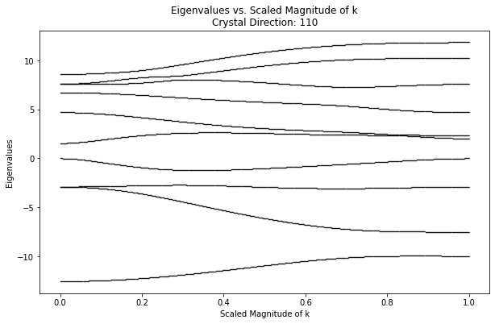
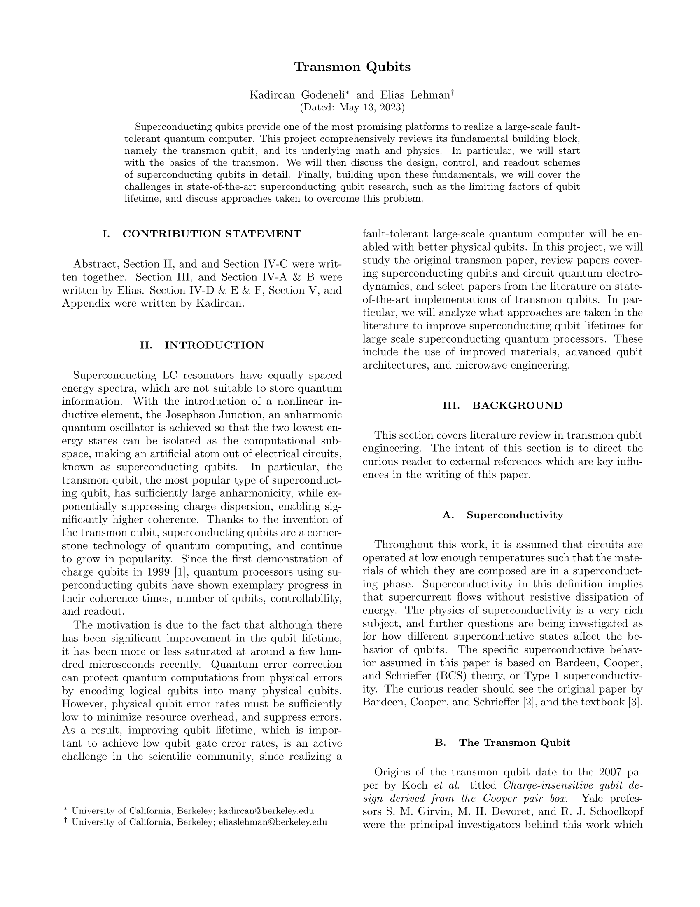

About Me
Hello and welcome to my website. I’m Elias, a Physics graduate student at the University of Oxford in Dr. Boon-Kok Tan's Superconducting Quantum Detectors Laboratory.
My research deals with designing quantum-limited amplifiers for applications across the mircowave and millimeter-wave bands (about 5-100 GHz). This technology finds use on telescope image sensors; in the measurement of single photons and quantum states; and in the search for axions, the proposed dark matter particle.
Previously, I worked at the University of California, Berkeley as a Research and Development Engineer in Irfan Siddiqi's Quantum Nanoelectronics Laboratory. There, I began designing the amplifiers I continue to study, and wrote my own quantum circuit compiler, Qdit, for systems with more than 2-levels.
Below you'll find my porfolio of projects.
Professional inquiries may contact me at elias.lehman@physics.ox.ac.uk.
Resume | LinkedIn
My research deals with designing quantum-limited amplifiers for applications across the mircowave and millimeter-wave bands (about 5-100 GHz). This technology finds use on telescope image sensors; in the measurement of single photons and quantum states; and in the search for axions, the proposed dark matter particle.
Previously, I worked at the University of California, Berkeley as a Research and Development Engineer in Irfan Siddiqi's Quantum Nanoelectronics Laboratory. There, I began designing the amplifiers I continue to study, and wrote my own quantum circuit compiler, Qdit, for systems with more than 2-levels.
Below you'll find my porfolio of projects. Professional inquiries may contact me at elias.lehman@physics.ox.ac.uk.
Resume | LinkedIn
Research
Graduate
Undergraduate

While at the University of Waterloo's Institute for Quantum Computing, I wrote several suplemental reports to assist the Lupascu group in their research of superconducting qubits.
Summary Report
Circuit Mapping (Supplemental)
Decoherence (Supplemental)
Summary Report
Circuit Mapping (Supplemental)
Decoherence (Supplemental)
IQC Internship
{kind=link}

A project done in Winter 2022 with the Quantum Open Source Foundation. Our team implemented an adaptive gradient descent for hybrid quantum-classical computing using IBM's qiskit library in Python.
Slides
Slides
Quantum Open Source Foundation - Adaptive Gradient Descent

I delivered this poster presentation as a final deliverable for the Berkeley Physics Undergraduate Research scholarship.
View
View
BPURS - Graphene Transistor Fabrication
Coursework
Electrical Engineering

The final report for EE230: analysis of an experiemental MoS2 transistor using models with a range of complexity.
Report
Report
Solid State Electronics - Final Report

A homework assignment for EE230: Solid State Electronics. The python notebook solves the first 10 energy levels in different directions of a face-centered cubic (FCC) crystal lattice given the lattice Hamiltonian parameters. The used parameters are for the Galium-Arsenide crystal.
Notebook
Notebook
EE230 - FCC Energy Level Simulation
Physics
An enjoyed lab report from my final physics course. The report discussed introductory properties of chaos theory and non-linear dynamics.
View
View
Adv. Exp. Phys. Lab Report

The final project for CS191: Quantum Information Science and Technology. I worked on a synopsis of the Transmon qubit, heavily inspired by the 2007 Koch et al. paper.
View
View